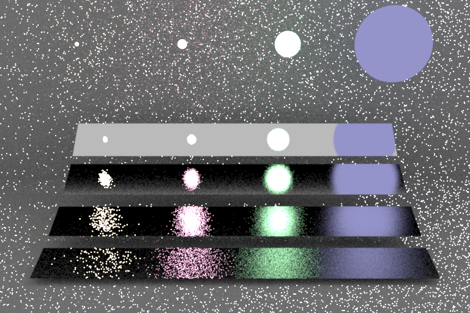
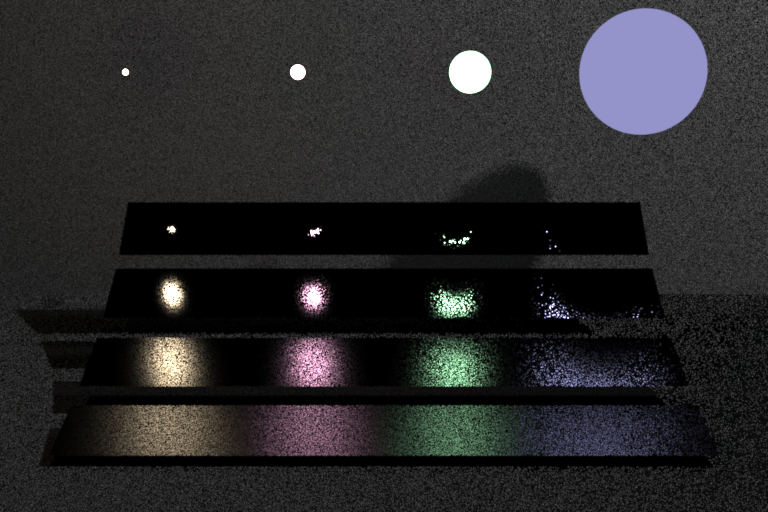
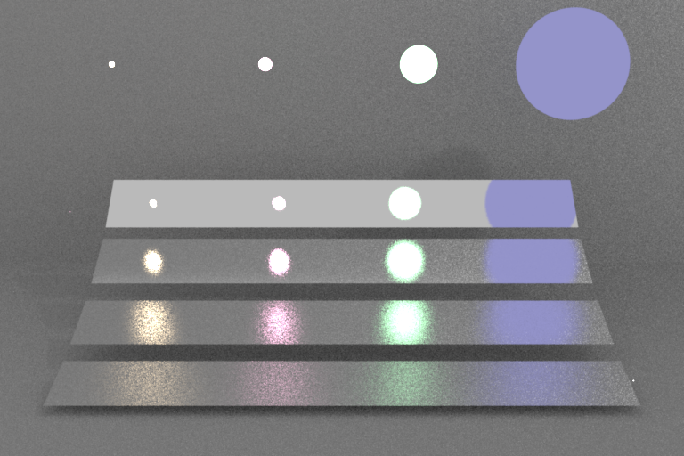

Integrators
The integrator is selected at the command line with -i <name>. It determines how light transport is simulated.
Path tracer — -i path (default)
A unidirectional path tracer. Each camera ray spawns a path that bounces through the scene until it reaches a light source, escapes, or is terminated by Russian roulette. Direct lighting at each bounce is estimated by Next Event Estimation (NEE), and the NEE and BSDF-sampled contributions are combined using Multiple Importance Sampling (MIS) with the power heuristic (β = 2).
The MIS is deterministic (Veach's multi-sample model): every non-specular bounce shoots both a light ray (NEE shadow ray) and a BSDF ray (the path continuation), and sums their power-heuristic-weighted contributions — it never randomly selects a single strategy. The light strategy is weighted w = power(p_light, p_bsdf); the BSDF strategy's emission (collected when the continuation lands on an emitter) is weighted w = power(p_bsdf, p_light). Specular/delta lobes (pdf = 0) skip the light ray and carry weight 1. The two pdfs are mutually exact for single-emitter scenes; with multiple area lights NEE uses the selected light's pdf while the BSDF strategy uses the full light-mixture pdf — both unbiased.
Properties
| Property | Value |
|---|---|
| Global illumination | Yes — indirect bounces, colour bleeding, caustics (via BSDF sampling) |
| MIS | Power heuristic, β = 2 |
| NEE | One sample per area light, one sample per environment map |
| Russian roulette | Starts at bounce 3; max survival probability 0.95 |
| Hard depth cap | 64 bounces |
Light transport
- Point lights — shadow ray per light; 1/r² falloff; MIS weight = 1 (delta distribution).
- Area emitters — one NEE sample from a randomly chosen emitter, combined with BSDF-sampling MIS.
- Environment map — one importance-sampled direction, combined with BSDF-sampling MIS.
- Emissive hit via BSDF sampling — weighted against the area light PDF to avoid double-counting.
Usage
kestrel scene.xml -o output.exr # path integrator (default)
kestrel scene.xml -o output.exr -i path # explicit
The path integrator is the correct choice for scenes with indirect illumination, area lights, glass, and environment maps. Increase sampleCount in the scene file to reduce noise.
Direct illumination — -i direct and -i direct_bsdf
Single-bounce integrators. Only the first surface hit from the camera is shaded; no recursive scattering occurs. Each comes in a single, deliberately un-combined sampling strategy — these are the two estimators that the path integrator's MIS blends, exposed separately so their individual strengths and failure modes are visible (see the comparison below).
-i direct— light sampling (NEE) only. For each surface point, one NEE sample is drawn from each light source present. Clean on rough/diffuse surfaces; noisy on near-specular ones, where a sampled light point rarely lands inside the narrow BSDF lobe.-i direct_bsdf— BSDF sampling only. One ray is scattered according to the BSDF; its contribution is kept if it lands on an emitter. Clean on near-specular surfaces; noisy on rough ones, where a wide BSDF sample rarely hits a small, bright light.
Properties
| Property | Value |
|---|---|
| Global illumination | No — no interreflection or indirect colour bleeding |
| MIS | None (each mode is a single strategy) |
| NEE | direct: one sample per area light, one per environment map |
| Russian roulette | None |
| Recursion depth | 1 (camera ray + one shadow or scatter ray) |
Light transport
- Point lights (
direct) — same as path integrator. - Area emitters —
direct: one uniform NEE sample;direct_bsdf: emission kept when the scattered ray lands on the emitter. No MIS in either. - Environment map —
direct: one importance-sampled direction;direct_bsdf: emission from the escaped ray. No MIS. - Specular surfaces —
directreturns black on delta BSDFs (a sampled light direction is never the mirror direction);direct_bsdfhandles them correctly.
Usage
kestrel scene.xml -o output.png -i direct # light sampling
kestrel scene.xml -o output.png -i direct_bsdf # BSDF sampling
The direct integrators are faster per sample and useful for: - Verifying material and lighting setup before a full path-traced render. - Scenes lit exclusively by point lights where indirect light is negligible. - Debugging: if the direct result looks wrong, the issue is in geometry or materials, not path-tracing logic.
They will underestimate brightness in scenes with significant indirect illumination (e.g. Cornell box, interior scenes).
Comparison: the Veach MIS scene
The classic test from Eric Veach's thesis (data/scenes/veach_mi/mi.xml) makes the trade-off concrete: four plates of increasing glossiness reflect four area lights of decreasing size. No single estimator is good everywhere.
kestrel data/scenes/veach_mi/mi.xml -i direct_bsdf -s 32 -o veach_bsdf.exr # BSDF sampling only
kestrel data/scenes/veach_mi/mi.xml -i direct -s 32 -o veach_light.exr # light sampling only
kestrel data/scenes/veach_mi/mi.xml -i path -s 32 -o veach_path.exr # full path tracer w/ MIS
BSDF sampling (direct_bsdf) |
Light sampling (direct) |
Path tracer + MIS (path) |
|---|---|---|
 |
 |
 |
All three are rendered at 32 spp.
- BSDF sampling is clean on the glossy plates (the scattered ray follows the lobe) but very noisy where the lights are small and bright — those directions are rarely sampled by a broad BSDF lobe.
- Light sampling is the mirror image: clean where lights are large, noisy on the near-specular plates, where a point sampled on a light almost never lands inside the tight reflection lobe.
- The path tracer combines both per bounce with the power heuristic (β = 2), so each region is denoised by whichever strategy samples it well. It is also a full path tracer, so unlike the two single-bounce direct modes it additionally carries indirect illumination — which is why this is MIS path tracing rather than a direct-only MIS estimator.